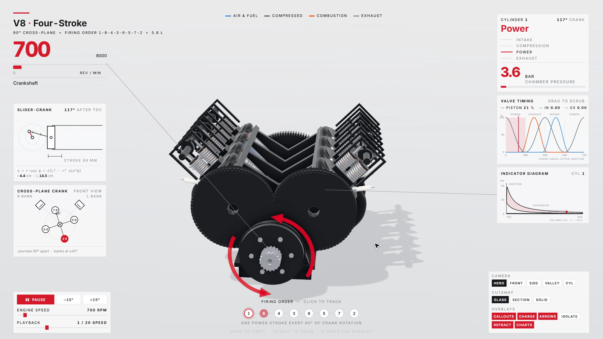

※ 공식 설치 문서(README·SKILL.md) 기준이에요. teardown은 Claude Code에 까는 무료 스킬(MIT)이에요. '이 기계 어떻게 움직여?'를 말로 물으면, 클로드가 그 기계를 3D로 지어서 인터넷 없이도 열리는 웹 페이지(HTML 파일) 하나로 만들어요. 가운데서 기계가 실제로 돌아가고, 버튼을 누르면 지금 일하는 부품이 열리고, 주변 계기판 숫자(회전수·압력 같은 것)는 부품을 움직이는 같은 계산에서 나와서 움직임과 어긋나지 않아요. 가만히 두면 커서가 혼자 둘러보고, 원하면 그 둘러보기를 소리까지 붙은 영상(기본 20초)으로 뽑아요.
터미널(윈도우는 PowerShell)에서 아래 '복사해서 쓰기'의 설치 명령을 한 번 실행해요. 그다음 설치된 폴더에서 한 번만 'npm install && npx playwright install chromium'을 실행해요(3D 화면을 찍는 브라우저를 받는 단계). 처음 쓸 때 클로드가 이 단계를 대신 돌리기도 해요(SKILL.md 'First run').
저장소에는 완성된 기계 3개가 들어 있어요 — V8 엔진, 세스나 착륙 장치, 스트란트비스트(바람으로 걷는 기계). 설치 폴더에서 'node sims/build.mjs v8-live'를 실행하면 teardown-out/dist/v8-live.html이 생기고, 그 파일을 크롬으로 열면 바로 돌아가요. 새 기계를 만들 때 클로드도 이 예시 중 가까운 것을 본떠요.

Claude Code를 열고 평소 말로 써요. 넣으면 좋은 것: ① 무슨 기계(4행정 오토바이 엔진, 기계식 손목시계, 굴삭기 팔) ② '뜯어 볼 수 있게', '시뮬레이터로' ③ 영상이 필요하면 '20초 영상도 녹화해 줘'. 사진·단면도·설명서 그림 같은 참고 자료가 있으면 같이 주세요 — 스킬 규칙상 문장만으로 지은 기계는 밋밋하게 나와서, 클로드가 실제 자료부터 찾고 그걸 보며 맞춰요.
결과는 지금 폴더의 teardown-out 안에 생겨요. dist/<이름>.html = 3D 페이지 하나(오프라인, 보통 1MB 안팎). 가운데 기계가 돌고, 버튼마다 부품 하나를 따로 꺼내거나(isolate) 유리처럼 비치게·잘라서(cutaway) 보여 줘요. 주변 숫자와 그래프는 부품 움직임과 같은 계산이라, 버튼으로 속도를 바꾸면 숫자도 같이 바뀌어요. 아무것도 안 누르면 커서가 혼자 둘러보고, 누르는 순간 조작이 넘어와요(25초 가만두면 다시 혼자).
'20초 영상도 녹화해 줘'라고 하면 클로드가 둘러보기 순서를 프레임 단위로 찍어 60fps mp4로 만들고, 같은 시간표로 효과음을 붙여요(ffmpeg·Python 필요). 클로드는 영상을 직접 못 보니 장면 사진을 여러 장 뽑아 확인하며 고쳐요 — 그래서 시간이 좀 걸려요.
같은 대화에서 고칠 점만 말해요. 예: '피스톤이 실린더를 뚫고 나가', '부품 이름표가 부품을 가려', '배경을 밝게', '카메라가 안으로 들어가는 장면을 넣어 줘'. 스킬 규칙상 부품이 겹치면 카메라로 숨기지 않고 치수를 고쳐요.
쓰기 좋은 때: 수업·발표에서 기계 원리를 보여 줄 때, 블로그·영상에 넣을 '움직이는 단면도'가 필요할 때, 궁금했던 기계(시계·엔진·펌프·변속기)를 직접 돌려 보고 싶을 때. 안 맞는 때: 실제 설계·정비용 정밀 도면(교육용 모형이에요), 참고 자료가 전혀 없는 상상 속 기계(밋밋하게 나와요), 사람·동물 같은 기계가 아닌 것.
① 설치 폴더에서 node sims/build.mjs v8-film → ② node sims/capture.mjs v8-film --size 1600x900 --dpr 1.2 --out teardown-out/v8-silent.mp4 → 26초짜리 둘러보기 영상: 엔진 전체가 돌다가 → 실린더 하나를 꺼내 흡입·압축·폭발·배기 순서로 피스톤과 밸브가 움직이고 → 다시 전체로 돌아와 회전수가 700에서 2400으로 올라가요. 오른쪽 위에는 지금 그 실린더가 어느 단계인지와 연소실 압력(bar)이 같이 바뀌어요. 새 기계를 말로 시키면 클로드가 이런 예시를 본떠 같은 구조(계산·모양·무대·계기판·둘러보기·소리)로 만들어요(공식 문서 기준).
터미널(PowerShell)에서 한 번
npx skills add elvarofficial/teardown -g -a claude-code
설치된 teardown 폴더에서
npm install && npx playwright install chromium
설치 폴더에서 — 만든 html을 크롬으로
node sims/build.mjs v8-live
Claude Code에서
[무슨 기계: 4행정 오토바이 엔진]을 뜯어 볼 수 있는 3D 시뮬레이터로 만들어 줘. 지금 일하는 부품이 열리는 버튼이랑 실제 숫자가 움직이는 계기판도 넣어 줘.
Claude Code에서
Make a teardown of a hydraulic excavator arm and record a 20-second video of it.
Claude Code에서
How does a mechanical watch keep time? Show me as a simulator.
도움이 되셨다면
@ai.antenna.kr
에서 바로 쓰는 AI 활용법을 계속 올립니다.